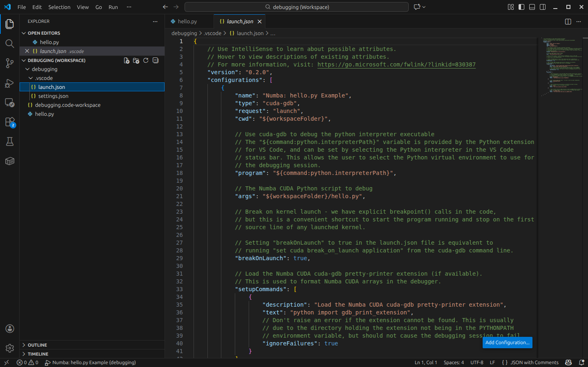
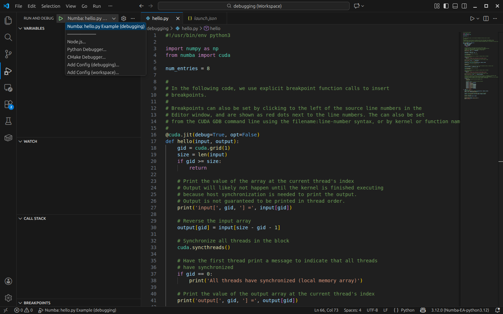
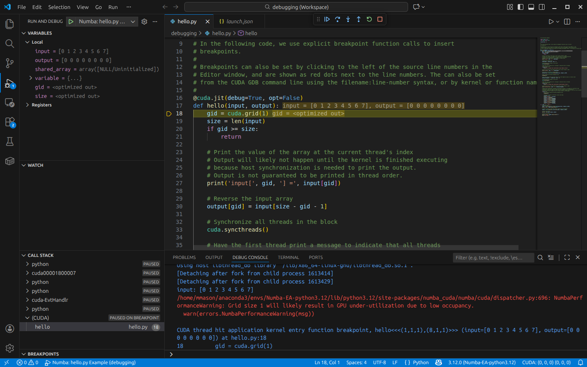
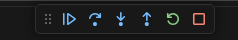

Debugging Numba CUDA Programs with Visual Studio Code and CUDA GDB#
Introduction#
With the release of the CUDA Toolkit (CTK) 13.1, CUDA GDB now includes beta support for debugging Numba CUDA programs on Linux.
CUDA GDB is included in the CTK and is the backend debugger for the Nsight Visual Studio Code Edition extension to support debugging
in Microsoft Visual Studio Code (VSCode).
Features included in this release:#
Linux support
Debugging of Numba CUDA programs with
CUDA GDBusingVSCode.Debugging of Numba CUDA programs with
CUDA GDBfrom the command line.Variable inspection and modification.
Execution control (continue, step over, step into, step out, restart, stop).
Setting breakpoints in the
VSCodeGUI.Setting breakpoints programmatically in Numba CUDA code by inserting a
breakpoint()call.Formatting arrays in a more human readable format.
Basic support for polymorphic variables.
These directions are focused on debugging with CUDA GDB using VSCode, but command line debugging with CUDA GDB is also supported.
A more detailed description of debugging with VSCode in general can be found here: https://code.visualstudio.com/docs/editor/debugging.
Installation and Environment Setup#
To begin you’ll need an installation of CUDA Toolkit 13.1 and corresponding CUDA Driver for Linux. The installer for Linux can be downloaded from NVIDIA’s website at https://developer.nvidia.com/cuda-downloads, or an installation based on conda-forge or similar could be used instead.
You will also need a working Numba CUDA development environment. The documentation for Numba CUDA including the installation instructions can be found at: https://nvidia.github.io/numba-cuda.
It is highly recommended that you use Anaconda, venv, or another Python virtual environment for development and debugging. The examples in this documentation are based on an Anaconda environment. In particular, make sure the required packages are installed in the virtual environment you wish to debug in.
The following commands can be used to create a Numba CUDA development environment using Anaconda.
This example creates a virtual environment called numba-cuda-debug using Python 3.12.
conda create --name numba-cuda-debug python=3.12
conda activate numba-cuda-debug
Configure and Launch VSCode#
Clone the Numba CUDA repository from GitHub.
git clone https://github.com/NVIDIA/numba-cuda.git
This is necessary to access the Numba CUDA debugging example code and the Numba CUDA pretty printer extension for CUDA GDB.
The pretty printer extension is used to support formatting Numba CUDA arrays in a more human readable format.
This is in addition to the install of the numba-cuda package itself.
Start VSCode using the debugging.code-workspace workspace file in the examples/debugging folder of the Numba CUDA repository:
cd numba-cuda/examples/debugging
code debugging.code-workspace
In the VSCode Extensions View search for and install or update the following extensions:
Python (from Microsoft)
Nsight Visual Studio Code Edition (from NVIDIA)
Press Ctrl+Shift+P to open the VSCode Command Palette and type “Python: Select Interpreter” to select the Python interpreter for the Numba CUDA virtual environment you wish to debug in (e.g. numba-cuda-debug). This must be the same virtual environment that was used to install the Numba CUDA packages.
Review the Debug Configuration (launch.json)#
Using the Explorer Pane on the left hand side of the VSCode window open the provided .vscode/launch.json file by double clicking on it.
You may have to expand the .vscode directory first in order to see it. This file contains the launch configuration for debugging Numba CUDA programs with VSCode.

Since Numba CUDA programs are Python programs, they are executed within the python interpreter executable which is the program that CUDA GDB needs to debug.
This configuration fragment selects the Python interpreter pointed to by the Python extension for VSCode by using the ${command:python.interpreterPath} variable.
The Python script/program to run and any additional arguments are specified by the args entry. Here we are debugging the hello.py Numba CUDA program.
This launch configuration fragment can be used as a starting point for customizing the debugging of other Numba CUDA programs.
Starting Debugging#
On the left hand side of the VSCode window look for the debugging icon (a right pointing arrow with a bug) and click on it.
A drop-down menu will appear near the top.
Select the Numba: hello.py Example menu entry and then click on the right pointing green arrow or press F5 to start the program running under cuda-gdb.

Setting breakOnLaunch to true in the launch.json configuration file causes the program to pause automatically on the very first
source line of any kernel that is launched, which is a helpful starting point for the debugging process.
If this is not desired, change breakOnLaunch to be false.
After starting the program, the debugger will stop at the first source line of the kernel launch.
Your VSCode window should look like the following image.
The program is stopped on line 18, which is indicated by the yellow arrow to the left of the line number.

Controlling Execution, Setting Breakpoints, and Inspecting Variables#
After the program is stopped in the kernel, the user can use the buttons near the top center of the VSCode window to control program execution.
From left to right these icons are: Continue / Step Over / Step Into / Step Out / Restart / Stop program execution.
These buttons have hover text that shows their function.

The following is a description of the functionality of each of the run control buttons and their corresponding CUDA GDB CLI commands.
Continuewill continue the program running until the next breakpoint or the program terminates. Equivalent to thecontinuecommand inCUDA GDB. When pressed, this icon will change to the pause icon. Pressing the pause icon will pause the program and return control to the user for further debugging.Step Overwill step over one line of source code, stepping over function calls instead of into them. Equivalent to thenextcommand inCUDA GDB.Step Intowill step over one line of source code, stepping into any function calls made by that line of code. Equivalent to thestepcommand inCUDA GDB.Step Outwill step out of the current function, returning to the line of code that called it. Equivalent to thefinishcommand inCUDA GDB.Restartwill restart the program from the beginning. Equivalent to theruncommand inCUDA GDB.Stopwill terminate the program and end the debugging session. Equivalent to thekillcommand inCUDA GDB.
Breakpoints can be set by clicking to the left of the source line numbers in the Editor window, and are shown as red dots next to the line numbers.
The user can also set breakpoints programmatically by calling breakpoint() in the Numba CUDA code. See the hello.py program for an example.
From here, you can continue debugging the kernel by pressing the Continue button, stepping through the code one line at a time using
the Step Over, Step Into, or Step Out buttons, or restarting the program from the beginning using the Restart button.
You can also stop the program at any time using the Pause button.
Command Line Debugging#
CUDA GDB can also be used to debug Numba CUDA programs from the command line. The key concept is that since the Numba CUDA program is executed within the python
interpreter, CUDA GDB must be started with the python interpreter as the program to debug. This is usually selected by either providing an absolute
path to the python interpreter, or simply python3 if the python interpreter is in the PATH. This is useful for specifying the correct python virtual environment
to use for the debugging session.
The following commands can be used to start the debugging session from the command line. Substitute the correct paths for the python interpreter and Numba CUDA program.
$ cuda-gdb python3
(cuda-gdb) set cuda break_on_launch application
(cuda-gdb) run /path/to/numba-cuda/examples/debugging/hello.py
This will start the debugging session and stop at the first source line of the kernel launch. The user can then use the CUDA GDB CLI to control program execution.
The most common execution control commands are:
run- Run the program until the next breakpoint or the program terminates.next- Step over one line of source code, stepping over function calls instead of into them.step- Step into one line of source code, stepping into any function calls made by that line of code.continue- Continue the program running until the next breakpoint or the program terminates.finish- Step out of the current function, returning to the line of code that called it.kill- Terminate the program and end the debugging session.
The following commands can be used to set breakpoints in the Numba CUDA code.
breakpoint- Set a breakpoint at the current line of source code.breakpoint <line number>- Set a breakpoint at the specified line number.breakpoint <function name>- Set a breakpoint at the specified function name.breakpoint <file name>:<line number>- Set a breakpoint at the specified file and line number.breakpoint <file name>:<function name>- Set a breakpoint at the specified file and function name.
The following commands can be used to inspect and modify variables in the Numba CUDA code.
print <variable name>- Print the value of the specified variable.set variable <variable name> = <value>- Set the value of the specified variable to the specified value.
Example command line debugging session#
$ cuda-gdb python3
NVIDIA (R) cuda-gdb 13.1
Portions Copyright (C) 2007-2025 NVIDIA Corporation
Based on GNU gdb 14.2
Copyright (C) 2023 Free Software Foundation, Inc.
License GPLv3+: GNU GPL version 3 or later <http://gnu.org/licenses/gpl.html>
This is free software: you are free to change and redistribute it.
There is NO WARRANTY, to the extent permitted by law.
Type "show copying" and "show warranty" for details.
This CUDA-GDB was configured as "x86_64-pc-linux-gnu".
Type "show configuration" for configuration details.
For bug reporting instructions, please see:
<https://forums.developer.nvidia.com/c/developer-tools/cuda-developer-tools/cuda-gdb>.
Find the CUDA-GDB manual and other documentation resources online at:
<https://docs.nvidia.com/cuda/cuda-gdb/index.html>.
For help, type "help".
Type "apropos word" to search for commands related to "word"...
Reading symbols from python3...
(cuda-gdb) set cuda break_on_launch application
(cuda-gdb) run hello.py
Starting program: /home/mmason/anaconda3/envs/Numba-GA-python3.12/bin/python3 hello.py
[Thread debugging using libthread_db enabled]
Using host libthread_db library "/lib/x86_64-linux-gnu/libthread_db.so.1".
[Detaching after fork from child process 1994689]
[Detaching after fork from child process 1994698]
input: [0 1 2 3 4 5 6 7]
/home/mmason/PythonDebugging/NUMBA/numba-cuda-numba-debug/numba_cuda/numba/cuda/dispatcher.py:690: NumbaPerformanceWarning: Grid size 1 will likely result in GPU under-utilization due to low occupancy.
warn(errors.NumbaPerformanceWarning(msg))
[Switching focus to CUDA kernel 0, grid 1, block (0,0,0), thread (0,0,0), device 0, sm 0, warp 0, lane 0]
CUDA thread hit application kernel entry function breakpoint, hello<<<(1,1,1),(8,1,1)>>> (input=..., output=...) at hello.py:18
18 gid = cuda.grid(1)
(cuda-gdb) list
13 # Editor window, and are shown as red dots next to the line numbers. They can also be set
14 # from the CUDA GDB command line using the filename:line-number syntax, or by kernel or function name.
15 #
16 @cuda.jit(debug=True, opt=False)
17 def hello(input, output):
18 gid = cuda.grid(1)
19 size = len(input)
20 if gid >= size:
21 return
22
(cuda-gdb) break 20
Breakpoint 1 at 0x7ffd436f83c0: file hello.py, line 20.
(cuda-gdb) continue
Continuing.
CUDA thread hit Breakpoint 1, hello<<<(1,1,1),(8,1,1)>>> (input=..., output=...) at hello.py:20
20 if gid >= size:
(cuda-gdb) print gid
$1 = 0
(cuda-gdb) p size
$2 = 8
Continuing from this point will print the input and output arrays and then stop at the manually inserted breakpoint in the source code.
(cuda-gdb) continue
Continuing.
input[ 0 ] = 0
input[ 1 ] = 1
input[ 2 ] = 2
input[ 3 ] = 3
input[ 4 ] = 4
input[ 5 ] = 5
input[ 6 ] = 6
input[ 7 ] = 7
All threads have synchronized (local memory array)
output[ 0 ] = 7
output[ 1 ] = 6
output[ 2 ] = 5
output[ 3 ] = 4
output[ 4 ] = 3
output[ 5 ] = 2
output[ 6 ] = 1
output[ 7 ] = 0
Thread 1 "python3" received signal SIGTRAP, Trace/breakpoint trap.
hello<<<(1,1,1),(8,1,1)>>> (input=..., output=...) at hello.py:50
50 shared_array[gid] = - input[size - gid - 1]
(cuda-gdb) list
45
46 # Hit a manually-inserted breakpoint here
47 breakpoint()
48
49 # Fill the shared array with the input array with negative values in reverse order
50 shared_array[gid] = - input[size - gid - 1]
51
52 # Synchronize all threads in the block
53 cuda.syncthreads()
54
Printing array variables without the pretty printer extension loaded will result in a display of the underlying implementation details.
With the pretty printer extension loaded, the array variables will be displayed in a more human readable format. To load the pretty printer,
use the cuda-gdb python command to import the gdb_print_extension.py file. This assumes that the gdb_print_extension.py file is in your PYTHONPATH.
Thread 1 "python3" received signal SIGTRAP, Trace/breakpoint trap.
[Switching focus to CUDA kernel 0, grid 1, block (0,0,0), thread (0,0,0), device 0, sm 0, warp 0, lane 0]
hello<<<(1,1,1),(8,1,1)>>> (input=..., output=...) at hello.py:50
50 shared_array[gid] = - input[size - gid - 1]
(cuda-gdb) next
53 cuda.syncthreads()
(cuda-gdb) print shared_array
$3 = {meminfo = 0x0, parent = 0x0, nitems = 8, itemsize = 8, data = 0x7ffe00000400, shape = {8}, strides = {8}}
Note that when command line debugging, the pretty printer extension must be loaded explicitly using the python command, either manually from
the command line or from the .cuda-gdbinit file.
(cuda-gdb) python import gdb_print_extension
(cuda-gdb) print shared_array
$4 = [-7 -6 -5 -4 -3 -2 -1 0]
Known Issues and Limitations#
Polymorphic Variables#
The beta release has minimal support for polymorphic variables, which will be improved in a future release.
Unlike statically typed languages such as C or C++, Python variables are inherently polymorphic in nature. Any assignment to the variable can change its type as well as changing its value. Polymorphic variables are handled by Numba CUDA by creating a union. This union is exposed to the debugger as a single variable with members for each of the different types the variable can be. With this beta release, the user will have to manually determine which member of the union is the current one based on the code context.
From the cuda-gdb command line, the user can inspect the union member types by using the ptype command. In VSCode this information is available in
the Variables window.
[Switching focus to CUDA kernel 0, grid 1, block (0,0,0), thread (0,0,0), device 0, sm 0, warp 0, lane 0]
CUDA thread hit application kernel entry function breakpoint, test_kernel_poly1<<<(1,1,1),(1,1,1)>>> (
gid_poly1_arg=9223372036854775807, size_poly1_arg=2147483647, results64=...) at polymorphism.py:10
10 gid_poly1 = 0x5a5a5a5a5a5a5a5a # Should be type int64
(cuda-gdb) ptype gid_poly1
type = @local struct variant_wrapper_struct {
@local int64 _int64;
@local uint64 _uint64;
}
CUDA GDB Pretty Printer Requirements#
CUDA GDB supports extensions to the debugger written in Python. The Numba CUDA cuda-gdb pretty printer is such an extension. This is used to provide a more readable representation of Numba CUDA arrays in the debugger.
The Numba CUDA pretty printer extension is located in the numba-cuda/misc/gdb_print_extension.py file. This extension is loaded automatically by the launch.json file at the beginning of the debugging session. The launch.json example below assumes that you’ve opened the debugging.code-workspace workspace file in the numba-cuda/examples/debugging directory (due to the use of ..). If the path to the gdb_print_extension.py file is not correct, simply edit the path to the misc/ directory below.
{
"environment": [
{
"name": "PYTHONPATH",
"value": "${workspaceFolder}/../../misc:${env:PYTHONPATH}"
}
]
}
The CUDA GDB pretty printer optionally uses the Python numpy package to inspect and print numpy arrays. The launch.json file sets up the environment necessary for debugging. However, the pretty printer runs inside of cuda-gdb and not as part of the Python program being debugged. This means that the numpy package must be installed in both:
The Python environment where
VSCodewas started in (required by the Numba CUDACUDA GDBpretty printer).The Python environment where the Numba CUDA program is being debugged (required by Numba CUDA).
These can both use the same Python environment, but that is not required. If the numpy package cannot be found in cuda-gdb’s execution environment, the pretty printer will be limited in what details it can provide about the array variables.
Automatic loading of the pretty printer extension is done by the following in the launch.json file. This command is executed before CUDA GDB is started. Failure to find the extension is ignored in case PYTHONPATH is not set correctly.
{
"setupCommands": [
{
"description": "Load the Numba CUDA cuda-gdb pretty-printer extension",
"text": "python import gdb_print_extension",
"ignoreFailures": true
}
]
}
Debugging Host Python Code#
Debugging host Python code using the debugpy package is not supported when also debugging with CUDA GDB. Numba CUDA programs are executed within the Python interpreter, which is the program that CUDA GDB controls during the debugging session. The debugpy python module also executes in the Python interpreter, which means that it requires that the interpreter be actively running in order for the VSCode Python debugger to communicate with it. However, CUDA GDB will stop both the CUDA host application and any code executing on the GPU while debugging, which prevents the debugpy package from running.
Debugging host Python code manually from the command line with the pdb package is supported, with the limitation that while cuda-gdb has the host application stopped pdb commands will not function (until the program is resumed).